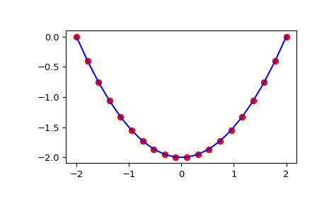

scipy.integrate.cumtrapz¶
-
scipy.integrate.cumtrapz(y, x=None, dx=1.0, axis=-1, initial=None)[source]¶ Cumulatively integrate y(x) using the composite trapezoidal rule.
- Parameters
- yarray_like
Values to integrate.
- xarray_like, optional
The coordinate to integrate along. If None (default), use spacing dx between consecutive elements in y.
- dxfloat, optional
Spacing between elements of y. Only used if x is None.
- axisint, optional
Specifies the axis to cumulate. Default is -1 (last axis).
- initialscalar, optional
If given, insert this value at the beginning of the returned result. Typically this value should be 0. Default is None, which means no value at
x[0]is returned and res has one element less than y along the axis of integration.
- Returns
- resndarray
The result of cumulative integration of y along axis. If initial is None, the shape is such that the axis of integration has one less value than y. If initial is given, the shape is equal to that of y.
See also
numpy.cumsum,numpy.cumprodquadadaptive quadrature using QUADPACK
rombergadaptive Romberg quadrature
quadratureadaptive Gaussian quadrature
fixed_quadfixed-order Gaussian quadrature
dblquaddouble integrals
tplquadtriple integrals
rombintegrators for sampled data
odeODE integrators
odeintODE integrators
Examples
>>> from scipy import integrate >>> import matplotlib.pyplot as plt
>>> x = np.linspace(-2, 2, num=20) >>> y = x >>> y_int = integrate.cumtrapz(y, x, initial=0) >>> plt.plot(x, y_int, 'ro', x, y[0] + 0.5 * x**2, 'b-') >>> plt.show()
